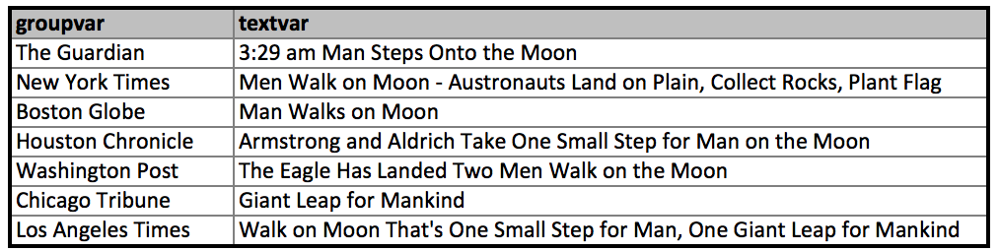
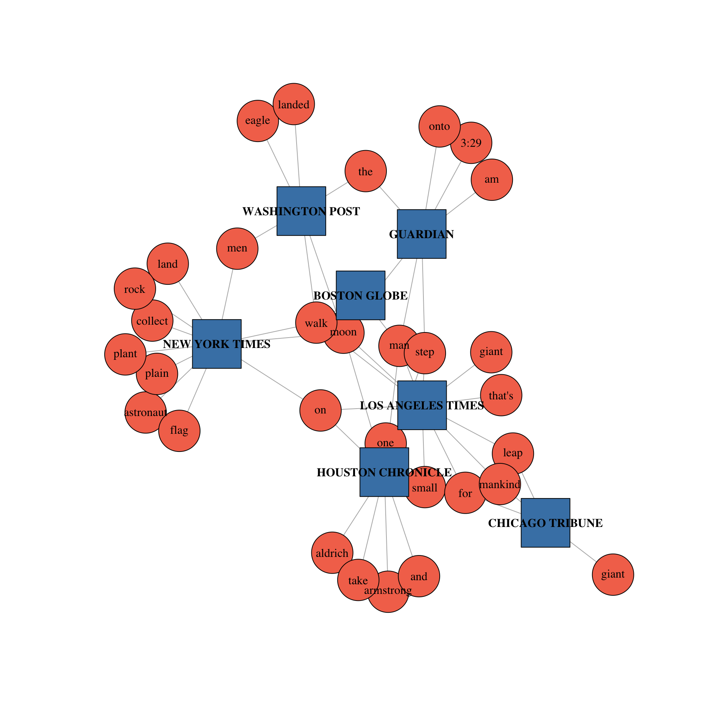
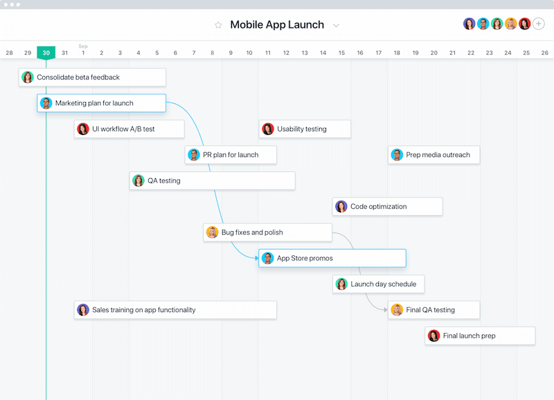

26.1. 信息数据可视化类型#
26.1.1. 时空数据可视化#
很多信息数据都包含时间属性，反映事物的动态演化过程。地理信息数据则附加了空间坐标，刻画了现象在地理空间的分布。时空数据可视化的目标是同时展现数据的时间和空间特征，揭示时空模式、进程、异常等。
对于时间数据，常用的可视化方法有:
时间线(Timeline):在一条横轴上展示事件序列。
甘特图(Gantt Chart):展示任务、进程的起止时间和持续时间。
主题河流(ThemeRiver):用层叠的条带展示主题随时间的演化。
时间轮(Time Wheel):用圆环分割展示周期性、循环的时间模式。
对于时空数据，常用的可视化方法有:
时空立方体(Space-Time Cube):用三维空间表示二维地理空间和一维时间。
轨迹图(Trajectory):在地图上用线条连接移动对象的位置变化序列。
热力图(Heatmap):用色彩编码表示空间现象的密度和强度变化。
时空流线图(Flow Map):用带宽度的曲线表示时空流量的迁移模式。 在时空数据可视化中，需要重点关注以下问题:
时间和空间尺度的选取，平衡局部细节和全局概览。
时间维度的展示形式，如线性、周期性、分支型等。
时空数据的聚合与抽象，平衡信息密度和可读性。
多源、异构时空数据的关联分析与融合展示。
时空语义信息的提取与可视化表达。 总的来说，时空数据可视化试图在有限的屏幕空间内展现时间和空间的无限变化，需要在时空尺度、分辨率、形式和美感等方面进行精心设计。
26.1.2. 层次与网络数据可视化#
很多信息数据具有层次或网络结构，如组织架构、文件目录、社交网络等。层次与网络可视化旨在揭示数据的拓扑结构、连接模式等特征。
对于层次数据，常用的可视化方法有:
树图(Treemap):用嵌套的矩形展示层次结构和数值属性。
辐射树(Radial Tree):用径向布局的节点-链接图展示层次结构。
旭日图(Sunburst):用嵌套的环形扇区展示层次结构和数值属性。
圆形打包图(Circle Packing):用嵌套的圆形展示层次结构。 对于网络数据，常用的可视化方法有:
节点-链接图(Node-Link Diagram):用点表示节点，线表示链接。
矩阵图(Matrix Diagram):用矩阵的行列交叉点表示节点间的连接。
平行坐标图(Parallel Coordinates):用平行轴展示多维属性，轴间的连线表示关系。
和弦图(Chord Diagram):用圆周上的弧线连接表示实体间的流量或关系。 在层次与网络可视化中，需要重点关注以下问题:
布局算法的选择，如力导向布局、辐射布局、层次布局等。
节点与链接的视觉编码，如尺寸、颜色等表示节点的重要性或类别。
网络的聚合与简化，平衡信息密度和可读性。
多属性网络数据的关联分析与展示。
动态网络演化过程的表达。 总的来说，层次与网络可视化试图揭示数据中的结构特征和关系模式，需要在空间布局、拓扑表达、信息编码等方面进行周密设计
26.1.3. 文本数据可视化#
文本可视化是一种将文本数据以可视化方式呈现的技术，旨在帮助用户更好地理解文本信息、发现模式、关系和见解，以及支持文本数据的分析和决策。文本可视化通常涉及将文本数据映射到图形、图表或其他视觉元素上，以便直观地呈现文本的特征和结构。以下是文本可视化的一些常见应用和技术。
词云（Word Clouds）
词云（Word Cloud）是一种常见的文本可视化技术，用于将文本中的关键词汇以可视化方式呈现。它通过将文本中的词汇按照其出现频率绘制成图像，以便用户可以直观地看到哪些词汇在文本中出现得更频繁，从而突出显示文本的关键特征，帮助用户更容易地理解文本的内容和重点。词云通常以一种艺术性的方式排列词汇，使其形成一个视觉上吸引人的图形。在词云中，词汇的字体大小通常与其在文本中的频率成正比。出现频率更高的词汇通常会显示为更大的字体，而出现频率较低的词汇则以较小的字体呈现。有时，词云还可以使用不同的颜色来表示词汇的重要性或情感极性。词云中的词汇通常以不同的角度和位置排列，以使整个图像看起来更加吸引人。这种可视化排列并不依赖于词汇的实际顺序，而是根据可视化设计来确定的。
词云可用于多种应用，包括：
文本摘要：通过生成文本的词云，用户可以快速了解文本的主题和关键词汇，从而进行文本摘要。
社交媒体分析：在社交媒体数据中生成词云可以帮助用户了解用户在社交媒体上的热门话题和讨论内容。
新闻报道分析：通过生成新闻文章的词云，可以迅速了解新闻报道的关键主题和重要词汇。
情感分析：在情感分析中，词云可以用来可视化情感相关的关键词汇，帮助用户理解文本的情感极性。
总之，词云是一种简单而有用的文本可视化工具，可用于快速了解文本数据的主要特征和重点。但需要注意，词云通常只提供了文本数据的高层次摘要，对于深入的文本分析可能需要更多复杂的技术和工具。
文本网络（Text Networks）
文本网络（Text Network）是一种文本可视化技术，用于可视化和分析文本数据中的关系、链接和连接。文本网络通过将文本中的关键词汇、实体或主题之间的关系表示为网络中的节点和边，以揭示文本数据中的模式、结构和关联。文本网络可以帮助用户更好地理解文本数据，并用于多种应用，如主题建模、信息检索、知识图谱构建和文本摘要。文本网络的构建和分析通常涉及自然语言处理（NLP）技术，如文本分析、关系抽取和主题建模。在文本网络中，文本数据中的关键词汇、实体或主题通常表示为节点，节点之间的关系表示为边。节点和边的属性可以用来表示节点的重要性、连接强度或其他相关信息。文本网络可以实现以下功能：
主题建模：文本网络可以用于主题建模，其中节点代表文本中的主题，边代表主题之间的相关性。这有助于识别文本中的主题和子主题，以及它们之间的关联。
关键词汇提取：文本网络可以用于提取文本数据中的关键词汇。通过分析节点的连接强度，可以确定哪些词汇在文本中具有重要性。
信息检索：文本网络可以用于改进信息检索系统，通过使用节点之间的关联来提高搜索结果的相关性。
知识图谱构建：文本网络可以用于构建知识图谱，其中实体、事件和关系都可以表示为节点和边。这有助于组织和查询大量的结构化信息。
文本摘要：通过分析文本网络中的节点和边，可以生成文本摘要，其中包含文本中的关键信息和关系。

图 26.1 原始文本#

图 26.2 文本网络#
文本时间轴可视化（Text Timeline Visualization）
文本时间轴可视化（Text Timeline Visualization）是一种用于可视化和分析文本数据随时间变化的技术。它将文本数据按照时间顺序呈现在一个时间轴上，以便用户可以追踪文本数据的演变、事件发展和趋势变化。文本时间轴可视化通常用于分析新闻文章、社交媒体帖子、历史文本和其他与时间相关的文本数据。
文本数据按照时间顺序排列在一个时间轴上，通常是从左到右或从下到上。每个时间点对应一个文本文档或事件，如图 26.3。通过观察文本时间轴上的趋势、峰值和突发事件，用户可以识别文本数据中的重要事件和趋势变化。这有助于了解文本数据的发展动态。用户可以在文本时间轴上选择特定时间范围内的文本数据，以进行文本检索和过滤。这有助于查找与特定事件或时间段相关的文本。文本时间轴可视化还可以与情感分析结合使用，以显示文本数据中情感的变化趋势。这有助于理解文本数据中的情感极性。用户可以观察文本时间轴上的主题和关键词汇随时间的变化，以了解文本数据中的主题演变。文本时间轴可视化通常具有交互性，用户可以通过缩放、拖动和选择时间范围等方式与数据进行互动，以更深入地探索文本数据。
文本时间轴可视化在多个领域中都有应用，包括新闻分析、历史研究、社交媒体分析、品牌监测和事件追踪。它可以帮助用户更全面地理解文本数据的演变和变化，以便支持决策制定、趋势分析和见解发现。文本时间轴可视化通常需要使用时间序列数据的处理和可视化技术，以有效地呈现和分析时间相关的文本数据。

图 26.3 文本时间轴https://asana.com/#
主题建模和热度图（Topic Modeling and Heatmaps）
主题建模可将文本数据分解为不同主题，并将每个主题的关键词汇可视化呈现。热度图则可以显示文本中主题、词汇或实体的相对热度，帮助用户理解哪些主题或内容受到关注。
文本聚类（Text Clustering）
文本聚类是一种文本分析技术，旨在将相似的文本文档或数据点分组到同一簇中，以便发现文本数据中的潜在模式、关系和结构。聚类是无监督学习的一种方法，它不需要事先标记的类别信息，而是通过文本数据本身的特征来自动分组文本。聚类可以用于生成文本数据的摘要或代表性文档，每个簇可以用其代表性文档来表示簇内的所有文本。
文本聚类通常使用相似性度量方法来计算文本文档之间的相似性或距离。常用的相似性度量包括余弦相似度、欧氏距离、Jaccard相似性等。文本聚类可以使用各种聚类算法来执行，包括K均值聚类、层次聚类、DBSCAN、谱聚类等。不同的算法适用于不同的数据和分析需求。
文本聚类在信息检索、文档分类、推荐系统、社交媒体分析、舆情监测等领域都有广泛的应用。它可以帮助研究人员和分析师更好地理解大规模文本数据集，发现数据中的有趣模式和见解。然而，文本聚类也面临一些挑战，如处理高维度数据、选择适当的特征表示和聚类算法等。因此，在实际应用中，需要仔细考虑数据的特性和任务的需求来选择合适的文本聚类方法。
情感分析可视化
情感分析可视化是一种将情感分析结果以可视化方式呈现的技术，旨在帮助用户更好地理解文本数据中的情感极性、情感趋势和情感分布。情感分析（又称情感情感极性分析或情感情感分类）是一种自然语言处理技术，用于确定文本数据中包含的情感，通常分为正面、负面和中性。
以下是情感分析可视化的一些关键特点和应用：
情感分布图：情感分析可视化通常使用情感分布图来表示文本数据中情感的分布。这些图表通常包括正面、负面和中性情感的百分比或计数，以及可能的情感极性变化趋势。
情感词云：情感分析可视化中，可以使用词云来可视化文本数据中与不同情感相关的关键词汇。每个情感类别的关键词通常以不同的颜色或字体大小呈现。
情感趋势图：对于时间序列数据，情感分析可视化可以绘制情感趋势图，显示情感随时间的变化。这对于分析文本数据中情感的演变非常有用，如社交媒体上的情感变化或品牌声誉的波动。
情感热力图：情感分析可视化可以使用情感热力图来表示情感之间的关系。这些图表显示了不同情感之间的相互作用，例如哪些情感常常同时出现在同一段文本中。
互动性：情感分析可视化通常具有交互性，用户可以通过鼠标悬停、点击或缩放等方式与可视化图表进行互动，以更深入地探索情感分析结果。
情感分析可视化在多个领域中都有应用，包括社交媒体分析、舆情监测、品牌管理、产品反馈分析和情感研究。它有助于企业和研究人员了解文本数据中的情感信息，识别用户情感倾向，监测情感变化，并根据情感分析结果制定决策和战略。这些可视化工具可以提供更深入的洞察力，帮助用户更好地理解情感数据中的模式和趋势。
文本可视化的目标是将复杂的文本数据转化为可理解和可交互的形式，以支持决策制定、见解发现和知识提取。不同的文本可视化技术可以根据数据和分析任务的需求选择和定制。
26.1.4. 高维数据可视化#
高维数据可视化是数据科学和机器学习领域中的一个重要挑战，因为人类的视觉系统通常只能有效地理解三维空间以下的数据。在处理高维数据时，有几个难点需要克服：
数据稀疏性：高维空间中的数据点通常是稀疏的，这意味着数据点之间的距离很大，很难在可视化中显示出来。这会导致可视化失真，因为只有一小部分数据点会被显示，而其他数据点被忽略了。
数据维度灾难：随着维度的增加，数据点之间的距离变得更加模糊，这使得难以找到有效的可视化方式来表示数据的结构和关系。高维数据的复杂性增加了可视化的挑战。
可视化的可解释性：高维数据可视化通常会导致信息的丢失和可视化的复杂性，这可能会降低可视化结果的可解释性。解释可视化结果对于理解数据和从中提取见解至关重要。
可视化的互动性：为了更好地理解高维数据，通常需要与可视化进行互动，探索不同的视图和维度组合。设计交互性可视化界面是一个挑战，需要考虑如何有效地将高维信息传达给用户。
选择适当的高维数据可视化方法是一个重要的决策，因为不同的方法可能会呈现不同的数据结构和关系。 在高维数据可视化中，降维方法发挥着重要作用。常见的降维方法有:
降维技术（如 PCA、t-SNE、UMAP）:利用正交变换将数据投影到方差最大的低维子空间。
多维尺度法（MDS）:保持数据点间的距离关系，将高维空间映射到低维空间。
并行坐标
热力图
t-SNE:基于数据点的相似性概率分布，实现非线性降维。
常用的高维数据可视化方法有:
散点图矩阵(Scatter Plot Matrix):在矩阵的每个子图中展示两两维度的散点图。
平行坐标（Parallel Coordinates） （是否需要介绍这么详细，其他方法是否也要详细描述？）
平行坐标是一种用于可视化多维数据的图形表示方法。它可以有效地显示和分析包含多个特征或属性的数据集，其中每个特征都在平行的垂直坐标轴上表示，而数据点则通过在这些坐标轴上绘制线段来表示。每个数据点都是一条连接各个坐标轴的线段，线段的位置和形状可以反映数据点在各个特征上的取值。
以下是平行坐标的关键特点和用途：
多维数据可视化：平行坐标适用于具有多个特征或属性的数据集，因为它可以在同一图表中同时显示多个维度的信息，而无需将数据降维到二维。
发现模式和趋势：通过观察数据点之间的线段交叉、平行和聚集等情况，可以识别数据中的模式、趋势和关系。这有助于理解数据的结构和特点。
数据筛选和比较：你可以使用平行坐标来选择特定范围内的数据点，从而进行数据筛选。此外，你还可以比较不同数据点或数据集之间的模式和趋势。
异常检测：异常值通常在平行坐标中很容易被识别，因为它们可能导致线段与大多数其他线段明显不同。
交互性：在平行坐标图中添加交互性可以使用户更轻松地探索数据，例如通过移动坐标轴、缩放、筛选和高亮显示数据点等方式。
尽管平行坐标图在可视化多维数据方面具有很大优势，但也存在一些挑战，如坐标轴的交叉可能导致可视化变得混乱，需要谨慎设计和交互操作来提高可读性和有效性。平行坐标图通常用于数据挖掘、数据分析、机器学习和可视化领域，以帮助研究人员和分析师理解和发现复杂数据集中的模式和关系。
雷达图(Radar Chart):将多维数据映射为封闭的多边形。
维度堆叠(Dimensional Stacking):递归地将高维空间嵌套划分为层次的子空间。
像素导向(Pixel-oriented):用像素编码表示每个数据点的多维量值
高维数据可视化的难点在于，如何避免维度缺失、视觉混乱，如何揭示高维数据的内在结构和特征，如何设计便于用户理解和交互的可视化隐喻。这需要可视化工作者积极吸收信息论、机器学习等领域的最新研究成果，探索创新的可视化设计。
26.1.5. 小结#
信息可视化与科学可视化相比，面临更加多样、非结构化的数据类型，需要设计更加新颖、灵活的视觉映射和隐喻，更加关注用户的交互探索和洞见获取。信息可视化是一个需要融合数据科学、可视化、人机交互、认知心理等多学科知识的综合研究领域。
从数据的角度看，信息可视化需要开发数据驱动的可视化技术，探索非结构化、跨媒体数据的有效表示、语义提取和融合分析方法，设计面向可视推理、知识发现的数据变换与映射模型。
从任务的角度看，信息可视化需要关注用户的可视分析需求，研究支持数据探索、假设推理、决策制定的交互机制和评估方法，实现”人-信息-环境”的无缝耦合。
从用户的角度看，信息可视化需要遵循以人为本的设计理念，深入理解用户的感知认知特点、审美情趣、个性化偏好，提供易学易用、美观高效的可视分析工具。
展望未来，大数据时代为信息可视化带来了海量的数据资源，但也带来了数据的异构性、噪声、动态性等诸多挑战。人工智能、沉浸式分析、可解释性等新兴技术，为信息可视化开辟了更广阔的研究空间。可视化研究者应积极拥抱变革，创新思路，探索数据驱动的智能可视分析新范式，用”可视化+X”的思路去拓展信息可视化的边界，提升信息可视化在数字经济时代的应用价值和社会影响。